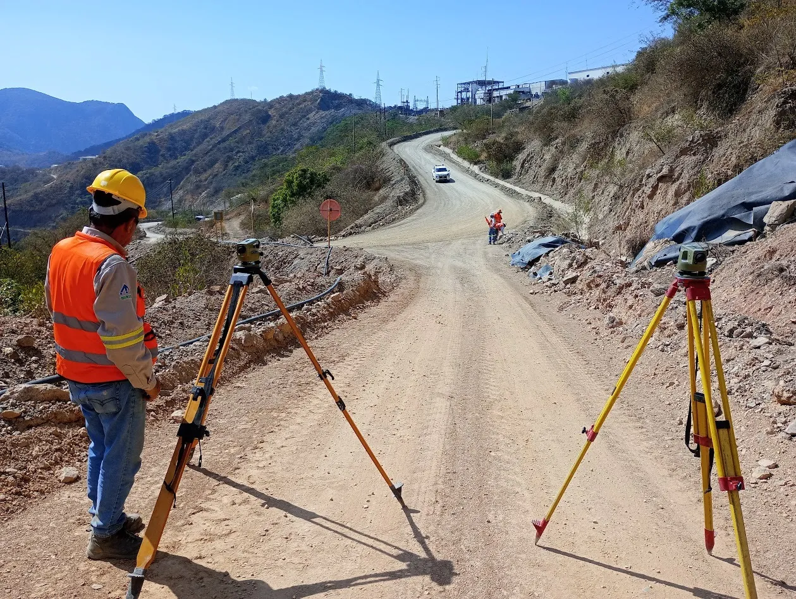

01
Venta
Equípate con respaldo, no solo con una caja.
Te asesoramos para elegir el instrumento correcto según tu tipo de trabajo y tu presupuesto. Sin tecnicismos de más, con criterio de técnicos.
- Estaciones totales y teodolitos
- Receptores GNSS / GPS
- Niveles ópticos y digitales
- Escáneres láser 3D
- Prismas, bastones, trípodes y accesorios
